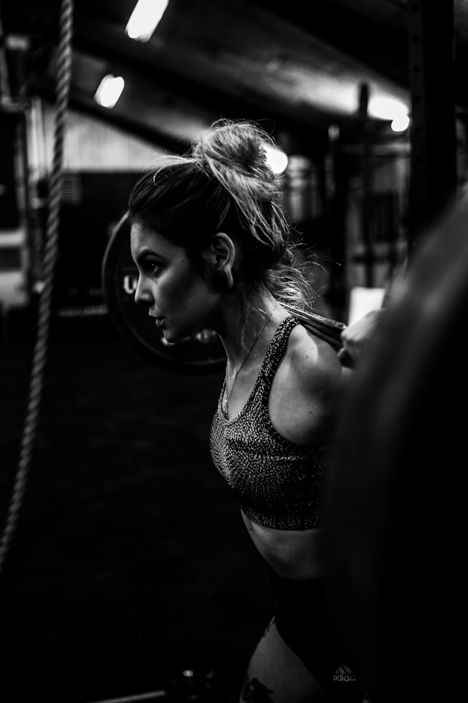

Mueve Tu Cuerpo, Transforma Tus Hormonas
El ejercicio no es solo para bajar de peso — es la herramienta más poderosa que tienes para mejorar tu sensibilidad a la insulina, bajar el cortisol y recuperar tu energía después de los 40.
No necesitas gimnasio, no necesitas equipos caros, y no necesitas ser atleta. Solo necesitas 20-30 minutos, tu propio cuerpo y la constancia.
🏃 **Cardio suave** que activa tu metabolismo sin agotar tus reservas
💪 **Fuerza con tu peso** que construye músculo y estabiliza la insulina
🧘 **Flexibilidad** que reduce tensión y baja el cortisol
📅 **Plan semanal completo** de lunes a domingo
⚠️ **Importante:** Escucha siempre a tu cuerpo. Si sientes mareo, dolor agudo o fatiga extrema, detente. Nunca hagas ejercicio en ayunas — come un snack con proteína 30 minutos antes.

Por Qué el Ejercicio Transforma Tu Metabolismo
Entiende cómo el movimiento mejora tu sensibilidad a la insulina, baja el cortisol y te devuelve la energía.

- 1️⃣ MEJORA LA SENSIBILIDAD A LA INSULINA — El ejercicio hace que tus células absorban mejor la glucosa, reduciendo la necesidad de insulina extra. El efecto dura hasta 48 horas después
- 2️⃣ BAJA EL CORTISOL — El movimiento libera la tensión acumulada y reduce la hormona del estrés que engorda tu abdomen
- 3️⃣ LIBERA ENDORFINAS — Las 'hormonas de la felicidad' mejoran tu ánimo, reducen antojos emocionales y te dan sensación de bienestar
- 4️⃣ CONSTRUYE MÚSCULO — Más músculo = más calorías quemadas en reposo = mejor metabolismo basal. El músculo es tu mejor aliado
- 5️⃣ MEJORA EL SUEÑO — El ejercicio regular regula tu ciclo circadiano, mejorando la calidad del sueño donde tu cuerpo se repara
- 📊 DATOS QUE MOTIVAN:
- 🔸 30 minutos de caminata reducen los niveles de insulina hasta un 20% durante las siguientes 24 horas.
- 🔸 El ejercicio de fuerza aumenta la sensibilidad insulínica hasta 48 horas después de la sesión.
- 🔸 Mujeres que hacen ejercicio 3-4 veces por semana tienen un 40% menos de síntomas de menopausia.
- 🔸 Solo 10 minutos de caminata después de comer reduce los picos de insulina post-comida un 22%.

- 🍌 NUNCA en ayunas — Come un snack 30-60 min antes: yogur con avena, banana con mantequilla de maní, o 1 huevo con pan integral
- 💧 HIDRÁTATE — Bebe agua antes, durante (cada 15 min) y después del ejercicio
- 👟 CALZADO adecuado — Usa zapatos deportivos cómodos, especialmente para caminar
- 🔥 CALENTAMIENTO — Siempre empieza con 5 min de caminata suave o movimientos articulares
- ❄️ ENFRIAMIENTO — Termina con 5 min de estiramientos suaves para evitar lesiones
- 🚨 DETENTE INMEDIATAMENTE si sientes:
- ⛔ Mareo fuerte o visión borrosa — Siéntate, toma agua, come algo dulce.
- ⛔ Dolor agudo en pecho, espalda o articulaciones — No es dolor muscular normal.
- ⛔ Sudoración fría excesiva — Puede ser señal de baja de azúcar.
- ⛔ Fatiga extrema que no mejora con descanso.
- 💡 Es NORMAL sentir dolor muscular leve al día siguiente — es señal de que el músculo se está reconstruyendo.

Lunes — Fuerza: Piernas y Glúteos
Comienza la semana activando los músculos más grandes de tu cuerpo — genera la mayor respuesta hormonal.

- 🔥 CALENTAMIENTO (5 min): Camina en el lugar elevando rodillas suavemente
- 🦵 SENTADILLAS — Baja como si fueras a sentarte en una silla. No necesitas bajar demasiado. 2 series × 10 repeticiones
- 🍑 PUENTE DE CADERA — Acostada boca arriba, pies apoyados, sube caderas apretando glúteos. 2 series × 10 repeticiones
- 🦵 ABDUCCIÓN DE CADERA — Acostada de lado, sube la pierna lateral lentamente. 2 series × 10 cada pierna
- 🦶 FLEXIÓN DE TOBILLO — De pie, sube y baja los talones. 2 series × 10 repeticiones
- 🧘 ESTIRAMIENTO (5 min): Estira cuádriceps, isquiotibiales y glúteos 10 segundos cada uno
- 📝 CÓMO HACER CADA EJERCICIO:
- 🔸 Sentadillas: Pies al ancho de caderas. Baja lento enviando caderas hacia atrás. Si necesitas apoyo, sostente de una silla.
- 🔸 Puente: Acuéstate, pies apoyados, sube caderas hasta que tu cuerpo forme una línea recta. Aprieta glúteos arriba 2 segundos.
- 🔸 Abducción: Acuéstate de lado, pierna de abajo doblada, sube la pierna de arriba lentamente y baja controlado.
- 🔸 Tobillo: Apóyate en una pared. Sube hasta la punta de los pies, mantén 1 segundo, baja lento.
- ⏱️ Descansa 30-60 segundos entre cada serie. Hazlo a tu ritmo.

Martes — Flexibilidad y Movilidad
Día de recuperación activa — estiramientos que reducen tensión, mejoran postura y bajan el cortisol.

- 🧘 CUELLO: Inclina la cabeza hacia un lado, sostén 10 segundos. Repite al otro lado. 3 veces cada lado
- 💪 HOMBROS: Lleva un brazo cruzado frente al pecho, presiona con la otra mano. 10 segundos cada brazo × 3
- 🔙 ESPALDA: De pie, estira brazos al frente entrelazando dedos, redondea la espalda. 10 segundos × 3
- 🦵 ISQUIOTIBIALES: Sentada en una silla, estira una pierna al frente, inclínate hacia adelante. 10 segundos × 3 cada pierna
- 🧘 CADERA: De pie, sube una rodilla al pecho y abrázala. 10 segundos × 3 cada pierna
- 🦶 PANTORRILLAS: De pie frente a una pared, un pie adelante y otro atrás, empuja la pared. 10 segundos × 3
- 💡 PRINCIPIOS DE ESTIRAMIENTO SEGURO:
- 🔸 Nunca rebotes — el estiramiento debe ser lento y sostenido.
- 🔸 Respira profundo durante cada estiramiento — inhala al preparar, exhala al estirar.
- 🔸 Si sientes dolor agudo, retrocede — debe sentirse como tensión suave, nunca dolor.
- 🔸 Puedes hacer estos estiramientos sentada en una silla si tienes problemas de equilibrio.
- 🔸 La flexibilidad mejora con la constancia — no fuerces, tu rango irá aumentando cada semana.

Miércoles — Cardio y Abdominales
Activa tu metabolismo con cardio suave y fortalece tu core — el centro de toda tu fuerza y estabilidad.

- 🏃 CARDIO (20 min): Caminata enérgica al aire libre o bicicleta estática. Empieza con 10 min si estás comenzando y sube 5 min cada semana
- 🔥 ABDOMEN 1 — ROTACIÓN: Sentada, manos detrás de la nuca, gira el tronco a la derecha y luego a la izquierda. Aprieta el abdomen. 2 series × 10
- 🔥 ABDOMEN 2 — INCLINACIÓN LATERAL: Sentada, inclina el tronco a un lado y al otro. Contrae abdomen. 2 series × 10
- 🔥 ABDOMEN 3 — ELEVACIÓN DE RODILLA: Sentada, sube una rodilla hacia el pecho, bájala, sube la otra. Abdomen apretado. 2 series × 10
- ❄️ ENFRIAMIENTO (5 min): Caminata suave + estiramientos de abdomen y espalda
- 📝 TIPS PARA EL CARDIO:
- 🔸 'Caminata enérgica' = puedes hablar pero con algo de esfuerzo. Si cantas cómodamente, ve más rápido.
- 🔸 Si no puedes salir a caminar, marcha en el lugar, sube y baja escaleras, o baila tu música favorita.
- 🔸 El mejor momento para caminar: 10-15 minutos después de cada comida principal — reduce los picos de insulina un 22%.
- 🔸 Para los abdominales: la clave es APRETAR el abdomen durante todo el movimiento, no la velocidad.
- 🔸 Si tienes problemas de espalda, haz todos los ejercicios sentada en una silla firme.

Jueves — Descanso Activo
Tu cuerpo construye músculo y se repara durante el descanso — este día es tan importante como los de ejercicio.
- 🚶 CAMINATA SUAVE — 15-20 minutos a paso tranquilo, sin prisa. Disfruta el aire libre
- 🧘 RESPIRACIÓN — Practica la técnica 4-7-8 (inhala 4 seg, sostén 7, exhala 8) × 4 repeticiones
- 💆 AUTO-MASAJE — Usa una pelota de tenis o tus manos para masajear cuello, hombros y pies (5 min)
- 🛁 BAÑO CALIENTE — Si puedes, toma un baño con sal de Epsom (rica en magnesio) para relajar músculos
- 😴 SIESTA CORTA — 20 minutos máximo (más de eso puede alterar tu sueño nocturno)
- 🧠 POR QUÉ EL DESCANSO ES EJERCICIO:
- 🔸 El músculo no crece DURANTE el ejercicio — crece durante el DESCANSO y el sueño.
- 🔸 El descanso baja el cortisol (hormona del estrés que sabotea tu insulina).
- 🔸 Entrenar todos los días sin descanso lleva al sobreentrenamiento, que ELEVA la insulina y el cortisol.
- 🔸 Tu sistema nervioso necesita 48 horas para recuperarse completamente de una sesión de fuerza.
- 🔸 Descansar NO es ser floja — es ser inteligente con tu metabolismo.

Viernes a Domingo — Completa Tu Semana
Cierra la semana con fuerza de brazos, actividad recreativa y descanso para empezar de nuevo el lunes.

- 🔥 CALENTAMIENTO (5 min): Gira brazos en círculos, abre y cierra manos, rota muñecas
- 🧱 FLEXIONES EN PARED — Manos en la pared a la altura del pecho, acerca y aléjate. 2 series × 10
- 💪 ELEVACIÓN DE BRAZOS — Con botellas de agua (500ml-1L), sube brazos lateralmente hasta los hombros. 2 series × 10
- 🏋️ CURL DE BÍCEPS — Con botellas, brazos pegados al cuerpo, sube la botella doblando el codo. 2 series × 10 cada brazo
- 🔙 REMO CON BOTELLA — Inclinada hacia adelante, tira la botella hacia tu cadera. 2 series × 10 cada brazo
- 🧘 ESTIRAMIENTO (5 min): Estira brazos, hombros y espalda
- 📝 CÓMO EJECUTAR:
- 🔸 Flexiones en pared: Párate a un brazo de distancia. Acerca tu pecho a la pared y empuja de vuelta. Más lejos = más difícil.
- 🔸 Elevación lateral: Brazos a los lados, sube hasta la altura de los hombros. Baja lento (3 segundos). No balancees.
- 🔸 Curl: Codo pegado al costado, solo mueve el antebrazo. Sube 2 seg, baja 3 seg.
- 🔸 Remo: Un pie adelante, inclínate 45°, tira la botella hacia tu cadera apretando la espalda.
- ⏱️ Descansa 30-60 seg entre series.

- 💃 BAILE — Pon tu música favorita y baila 30 minutos en tu sala. ¡El mejor cardio que existe!
- 🌳 SENDERISMO — Caminata al aire libre por un parque, cerro o sendero natural
- 🌱 JARDINERÍA — Agacharse, cavar, cargar macetas = ejercicio funcional completo
- 🏊 NATACIÓN — Si tienes acceso, es el ejercicio más completo y suave para las articulaciones
- 🚴 BICICLETA — Paseo en bicicleta a ritmo tranquilo por tu vecindario
- 🎯 LA REGLA DEL SÁBADO:
- 🔸 Elige UNA actividad que DISFRUTES — no la que 'deberías' hacer.
- 🔸 Mínimo 30 minutos, pero sin límite máximo si la estás pasando bien.
- 🔸 Invita a alguien: pareja, amiga, hija. El ejercicio social reduce el cortisol el doble.
- 🔸 No te presiones con la intensidad — la meta es DISFRUTAR y mover el cuerpo.
- 🔸 El ejercicio que más funciona es el que haces con consistencia — y ese es el que disfrutas.

- 😴 DESCANSO COMPLETO — Tu cuerpo necesita al menos 1 día de descanso total por semana
- 📝 EVALÚA TU SEMANA — ¿Completaste las rutinas? ¿Qué te costó más? ¿Qué disfrutaste?
- 📅 PLANIFICA LA PRÓXIMA — Agenda tus 4 días de ejercicio como citas inamovibles
- 🛒 COMPRAS — Prepara los ingredientes para tus comidas pre y post-ejercicio de la semana
- 🧘 MEDITACIÓN — 10 minutos de mindfulness o respiración para cerrar la semana con calma
- 📊 REGISTRO SEMANAL (anota cada domingo):
- ✅ Lunes fuerza: Completado / No completado — ¿Cómo me sentí?
- ✅ Martes flexibilidad: Completado / No completado — ¿Qué estiré más?
- ✅ Miércoles cardio: Completado / No completado — ¿Cuántos minutos logré?
- ✅ Viernes brazos: Completado / No completado — ¿Subí peso de botellas?
- ✅ Sábado recreativo: ¿Qué actividad elegí? — ¿La disfruté?